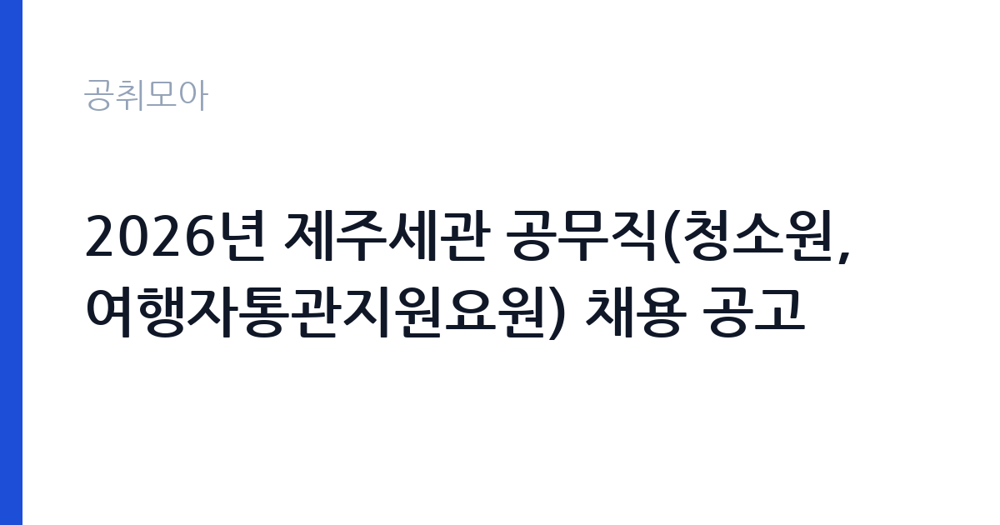

[국가기관] 2026년 제주세관 공무직(청소원, 여행자통관지원요원) 채용 공고
관세청 제주세관 · 제주 · 마감 2026-11-05 (D-8) · 출처 나라일터

한눈에 보는 모집 조건
| 기관 | 관세청 제주세관 |
|---|---|
| 공고명 | 2026년 제주세관 공무직(청소원, 여행자통관지원요원) 채용 공고 |
| 고용형태 | 공무직 |
| 근무지 | 제주 |
| 게시일 | 2026-10-29 |
| 마감일 | 2026-11-05 (D-8) |
지원자격, 이렇게 읽으세요
- 공무직(청소원) 1명 공무직(여행자통관지원요원) 1명
- 접수 ~2026-11-05 마감
- 세부 조건은 원문 공고문 확인
공무직 근로자는 공무원이 아니라 근로기준법이 적용되는 근로자이지만 기간의 정함이 없는 무기계약으로 채용되는 경우가 많아 정년까지 근무가 가능합니다. 채용은 공무원 시험과 달리 기관의 자체 전형으로 진행되고 인사 규정과 임금표를 적용받습니다. 이번 공고는 관세청 제주세관에서 직접 진행하는 자체 전형으로, 응시자격과 제출서류는 공고문에 항목별로 제시됩니다. 미화 직무는 학력과 경력을 엄격하게 보지 않는 대신, 실제 근무 가능성과 건강 상태를 확인합니다. 무거운 장비를 들고 계단과 화장실을 오가야 하므로 허리와 무릎 상태가 실질적인 조건입니다. 채용 인원이 1명인 경우가 많아 경쟁이 몰릴 수 있고, 근무지 거주자나 관련 경력자를 우대하는 조항이 붙기도 합니다. 접수 방식이 우편이나 방문인 경우가 있어 온라인 접수만 생각하면 일정을 놓칩니다. 국가공무원법상 결격사유 확인 절차가 있습니다. 서류는 접수 마감 이후 보완이 되지 않으므로 자격 요건과 증빙 서류를 마감 전에 모두 갖춰야 합니다. 공고문에 명시된 우대 사항은 해당 여부를 확인해 증빙을 첨부해야 가점이 반영됩니다. 경력 요건은 총 경력이 아니라 해당 직무 경력만 인정하는 경우가 있으니, 증명서의 직무 기술을 함께 확인하십시오. 이 공고 원문에 적힌 응시 조건 문구는 '모집분야 : 청소원, 여행자통관지원요원 ㅇ 고용형태 : 공무직 ㅇ 자격요건 : 여행자통관지원요원[HSK 5급 이상 또는 관광통역안내사(중국어분야) 자격증 소지자(중국어 통역이 가능)] ㅇ 접수기간 : 2026.'입니다. 문구를 그대로 읽고 본인 해당 여부를 하나씩 표시해 두면 서류 단계에서 탈락하는 일을 줄일 수 있습니다.
이 공고의 포인트
이 공고의 첫 번째 포인트는 고용 형태입니다. 무기계약으로 채용되면 정년까지 근무가 가능해 재계약 부담이 없습니다. 반대로 기간제로 채용되는 공고라면 계약 기간을 먼저 확인해야 합니다. 두 번째는 업무 범위가 명확하다는 점입니다. 시설 미화 직무로 채용되므로 배치 이후 담당 업무가 크게 흔들리지 않습니다. 세 번째는 근무지입니다. 제주 지역 근무로 수도권 공고에 비해 지원자 분포가 넓지 않아 상대적으로 경쟁이 분산되는 경우가 있습니다. 채용 규모가 크지 않아 면접 비중이 높은 전형이 될 가능성이 있습니다. 같은 직무로 함께 올라온 공고 4건 가운데 마감이 중간에 위치하므로 다른 공고와 일정이 겹치는지 확인하십시오. 다만 선발 인원이 1명으로 많지 않아 자격을 갖춘 지원자가 몰리면 경쟁률이 높아질 수 있습니다.
전형은 어떻게 진행되나
서류전형과 면접전형 외에 직무수행능력 평가가 붙는 경우가 있습니다. 평가 방식은 공고문에 구체적으로 적혀 있으므로 어떤 항목에 배점이 높은지 먼저 파악하십시오. 면접에서는 지원 동기보다 실제 업무 경험에 대한 질문이 많고, 답변의 구체성이 평가를 가릅니다. 전형 일정은 서류 마감 이후 빠르게 진행되므로 연락 가능한 번호를 정확히 기재하고 문자와 메일을 수시로 확인해야 합니다. 최종 단계에서는 결격사유 조회와 신체검사가 진행됩니다. 제출서류 원본은 최종 단계에서 다시 요구되는 경우가 있어 사본과 함께 보관하십시오.
원문에서 확인한 전형 방식
제주세관 공고 제2026-8호 제주세관에서 공무직(청소원, 여행자통관지원요원) 채용 계획을 붙임과 같이 공고하오니 성실하고 역량있는 인재의 많은 응모 바랍니다. ㅇ 모집분야 : 청소원, 여행자통관지원요원 ㅇ 고용형태 : 공무직 ㅇ 자격요건 : 여행자통관지원요원[HSK 5급 이상 또는 관광통역안내사(중국어분야) 자격증 소지자(중국어 통역이 가능)] ㅇ 접수기간 : 2026. 11. 2.(월)~2026. 11. 5.(목) ㅇ 문 의 처 : 064-797-8812(제주세관 인사담당자) 2026년 10월 29일 제 주 세 관 장
이런 분께 추천해요
- 장기간 성실하게 근무할 수 있는 분
- 신체 활동에 무리가 없는 분
- 출퇴근 시간을 정확히 지킬 수 있는 분
지원 전 체크리스트
- 응시자격 요건과 경력 기준을 충족하는가 — 경력은 증명서로 입증해야 합니다
- 무기계약 여부와 정년 기준을 공고문에서 확인했는가
- 제출서류 목록을 모두 준비했는가 — 누락 시 서류 단계에서 탈락합니다
- 접수 마감 2026-11-05 이전에 접수 방식을 확인해 제출했는가
모집 일정과 제출 타이밍
공고 게시일은 2026-10-29, 접수 마감은 2026-11-05입니다. 준비 기간은 약 7일로 서류 준비와 자격 증빙을 함께 처리하기에는 넉넉하지 않은 편입니다. 첫 이틀 안에 공고문과 첨부 서식을 내려받아 요건을 확인하고 남은 기간에 증빙 서류를 발급받는 일정이 현실적입니다. 면접은 서류 합격자 발표 후 짧은 간격으로 진행되는 경우가 많으므로 서류 제출과 동시에 면접 준비를 시작하는 편이 안전합니다. 마감일에는 접수 시스템이 몰리므로 하루 전까지 제출을 마치는 것이 좋습니다. 임용 예정일이 빠르게 잡히는 공고이므로 현재 일정과 겹치지 않는지 미리 확인하십시오. 제주 근무지는 도내 이동 거리가 길고 숙소 제공 여부가 총비용에 큰 영향을 줍니다. 마감까지 일주일 안팎이 남아 서류 준비와 증빙 발급을 병행해야 합니다. 선발 인원이 한두 명 수준이라 지원자 개개인의 서류 완성도가 그대로 평가에 반영됩니다.
직무 이해하기: 국가기관
관세청과 세관은 수출입 통관과 관세 부과, 밀수 단속을 담당하는 국가 기관입니다. 변호사·회계사 같은 전문 자격 인력을 임기제로 채용해 법률 자문과 송무를 맡기며, 임용 기간과 연봉등급이 공고문에 명시됩니다. 보안 서약과 신원조회 절차가 엄격합니다. 미화 업무는 건물 내부와 외부의 청결을 유지하는 일입니다. 사무실과 화장실, 복도, 계단을 정해진 순서와 주기로 청소하고, 쓰레기를 분리해 지정된 장소로 옮깁니다. 행사나 회의가 있는 날에는 사전 정리와 사후 청소가 추가됩니다. 바닥 왁싱이나 유리창 청소처럼 장비를 쓰는 작업도 포함되며, 세제와 소독제 사용법을 지켜야 합니다. 근무 시간이 이른 아침이나 저녁으로 정해지는 경우가 많습니다. 업무는 혼자 처리하기보다 부서 단위로 나눠 진행되므로 담당 구역과 협업 범위를 입사 초에 확인하는 것이 중요합니다. 업무 강도와 근무 시간대는 부서 배치에 따라 달라지므로 면접에서 확인하는 것이 가장 정확합니다.
자기소개서 작성 팁
미화 지원서는 거창한 표현보다 구체적인 생활 경험이 효과적입니다. 가정이나 이전 직장에서 청결을 유지한 경험, 시설 관리나 봉사 활동 경험을 적으십시오. 장기 근무 의사와 출퇴근 가능성을 분명히 쓰고, 체력 유지 방법을 한 줄 덧붙이면 신뢰를 줍니다. 지원 동기는 안정적인 고용과 성실한 근로라는 두 축으로 정리하면 좋습니다. 구성은 지원 동기, 직무 경험, 기여 방안 순서가 무난합니다. 지원 동기는 관세청 제주세관의 사업 중 본인이 관심을 가진 부분을 한 가지로 좁혀 서술하고 추상적인 표현은 줄이십시오. 직무 경험은 담당했던 업무와 규모, 결과를 수치로 제시하면 설득력이 올라갑니다. 기여 방안은 입사 후 첫 3개월과 1년 계획으로 나눠 쓰면 준비도가 드러납니다.
면접 준비 포인트
면접에서는 성실성과 근무 지속 의사를 확인합니다. 힘든 업무를 오래 할 수 있는지, 지저분한 작업을 꺼리지 않는지, 함께 일하는 사람과 어떻게 협력하는지를 묻습니다. 청소 순서와 안전 수칙을 알고 있는지도 평가 요소입니다. 결근 없이 근무할 수 있는지, 출퇴근 시간을 지킬 수 있는지가 실질적인 판단 기준입니다. 답변은 상황, 판단, 조치의 순서로 정리하면 전달이 분명해집니다. 모르는 질문에는 모른다고 밝히고 확인 방법을 제시하는 편이 억지 답변보다 낫습니다. 마지막에는 근무 의사와 함께 2026-11-05 이후 일정에 언제든 응할 수 있다는 점을 전달하십시오. 지원 기관의 최근 사업이나 조직 개편 내용을 확인해 두면 지원 동기 질문에서 차이가 납니다.
급여·근무조건 읽는 법
관세청 제주세관의 구체적인 보수 수치는 이 공고 원문의 처우 항목과 보수표에서 확인해야 합니다. 공시 자료로 확인되지 않은 금액은 이 글에서 추정해 제시하지 않습니다. 알리오 2025년 결산 공시 기준 공공기관 전체 일반정규직 1인당 평균보수는 7,376만 9천원, 신입사원 평균초임은 4,031만 6천원입니다(무기계약직 미포함). 미화 직무의 보수는 기관의 무기계약직 또는 공무직 임금표를 따르며, 기본급에 정액급식비·명절휴가비·복지포인트 등이 더해지는 구조입니다. 무기계약 신분이면 정년까지 근무가 가능하고 매년 임금이 조정됩니다. 구체적인 금액과 수당 항목은 공고문 보수표에 있으니 원문에서 확인해야 합니다. 기간제로 채용되는 경우 계약 기간과 재계약 조건을 함께 확인하십시오. 2026년 적용 최저임금은 시급 10,320원, 월 환산 2,156,880원(주 40시간·209시간 기준)입니다. 고용노동부 고시 제2025-47호로 확정된 금액입니다. 공고문에 금액이 제시되지 않은 항목은 원문 보수표나 처우 설명에서 확인해야 하며 확인되지 않은 수치는 쓰지 않는 것이 원칙입니다. 비교할 때는 월 급여뿐 아니라 상여·명절휴가비·복지포인트·초과근무수당까지 포함한 연간 총액으로 계산하십시오. 기간제라면 계약 기간 동안의 총액을, 무기계약이라면 호봉 상승과 정년까지의 누적 소득을 기준으로 판단하는 편이 정확합니다.
자주 묻는 질문
- 선발 인원은 몇 명인가요?
공고문 기준 1명입니다. 직종별로 인원이 나뉘는 경우가 있으니 모집분야 항목을 함께 확인하십시오. - 근무지는 어디인가요?
제주 지역의 관세청 제주세관 소속 근무지입니다. 세부 주소와 출퇴근 조건은 원문 공고문에서 확인할 수 있습니다. - 보수는 얼마인가요?
채용 신분(공무직)과 기관 임금 규정에 따라 정해지며 구체적인 금액은 공고문 처우 항목에 제시됩니다. 금액이 공개되지 않은 경우에는 원문의 보수표를 확인하십시오.
함께 보면 좋은 공고
[국가기관] 2026년 제4회 기상청 공무원 경력경쟁채용시험 공고 — 마감 2026-11-09[국가기관] 공주교육대학교 국가직공무원 행정9급 전입 희망자 모집 공고 — 마감 2026-11-10[국가기관] [부산고등법원] 공무직 근로자(환경관리원) 신규채용시험 시행계획 공고 — 마감 2026-11-11출처: 나라일터 공개정보를 바탕으로 공취모아가 정리한 안내글입니다. 모집 조건·일정은 변경될 수 있으니 지원 전 반드시 원문 공고문을 확인하세요. 본 글은 정보 제공용이며 합격을 보장하지 않습니다.